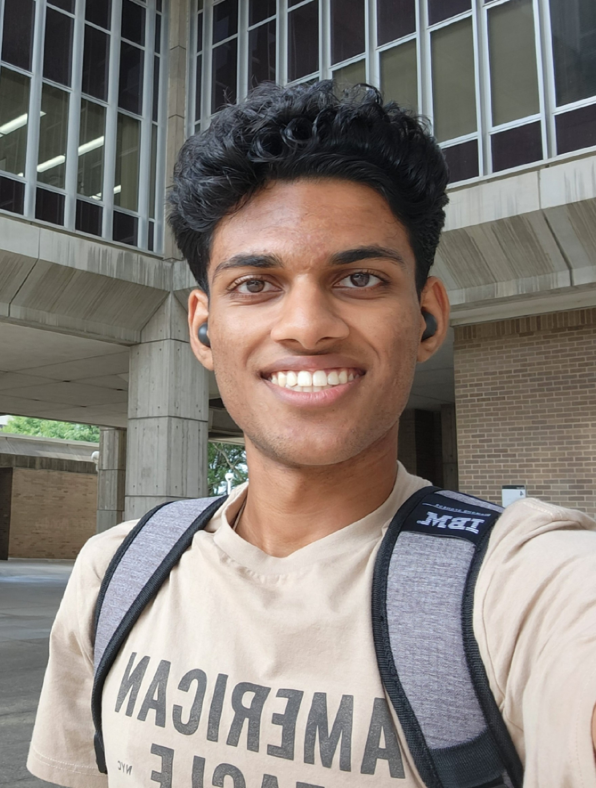

About Me

My name is Arvind Marella, and I am a Sophomore at the University of Wisconsin-Madison, pursuing a double-major in Computer Science and Data Science. I have always been interested in the integration of software and technology to solve complex problems in everyday life. I plan on pursuing a career in AI and software by exploring real-world applications and contributing to improving society.
Over the years, I have worked on several projects that have allowed me to persevere, learn from failures, become resourceful, and expand my horizons. Please explore my work and do not hesitate to reach out.
- Technical Skills
- Machine Learning, Fusion 360, Python, Java, C, Arduino, JavaScript, Multisim Circuit Design Software
- Interests
- Playing the Violin, Playing Cricket, and Practicing Taekwondo Martial Arts